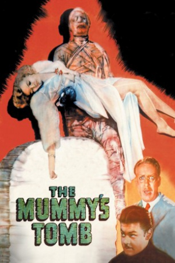
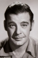
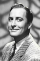

Country:United States, 61 minutes
Spoken languages:English
Genres:Horror, Mystery, Thriller
Director(s):Harold Young
Writer(s):Griffin Jay, Henry Sucher
Video Codec:Unknown
Number: 2565


Certification:NR
Storyline:
A high priest of Karnak travels to America with the living mummy Kharis (Lon Chaney Jr.) to kill all those who had desecrated the tomb of the Egyptian princess Ananka thirty years earlier.
Cast:  

Medium: Original DVD,
Comments: Part of: The Mummy - The Legacy Collection
Loaned: No
Aspect ratio: Unknown